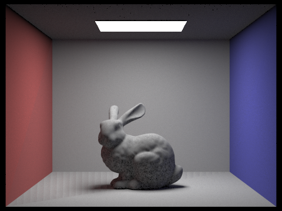
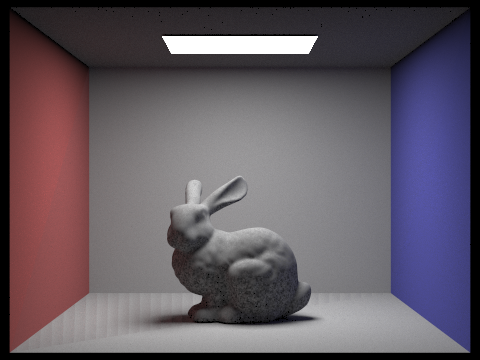

Project 3: Pathtracer
Rohan Mathur and Joy Liu
In this project, we implemented various components of how light interacts with a scene and winds up in our camera sensor. We generated rays and determined whether they intersect with objects in the scene with different numbers of bounces. The process is accelerated using a bounding volume hierarchy that helps the algorithm run in logarithmic time with respect to the number of objects. The visual properties of the material are parametrized by how much light is reflected, and in what direction, using the bidirectional reflectance distribution function.
Given a fixed camera position and field of view, the ray is defined by the image coordinate it pierces. Since the width and height of the sensor are a function of the full field of view, we can scale the field of view by the normalized image coordinates to determine the coordinates in camera space. Finally, we normalize this direction and convert to world space.
For triangle intersection, we used the Moller Trumbore equation, which sets up a linear system of equations to solve for the barycentric coordinates and the point on the ray, t. If this t is within the end points of the ray and the barycentric coordinates are all between 0 and 1, then the ray intersects with the triangle.
For sphere intersection, we set up a quadratic equation to solve for the point on the ray, t, that intersects with the sphere. If there are two solutions, then the ray goes through the sphere, if there is one, then the ray is tangent to the sphere, and there could also be no intersections at all.
Our BVH heuristic goes through object centroids and determines which axis has the highest range of values. Then we split using the midpoint between the minimum and maximum values on this axis.
Our BVH construction algorithm takes in a list of primitives and initializes a current node. It first calculates the bounding box for the current node by getting the maximum and minimum values for all the primitives in the current list. If the number of elements is less than the maximum leaf size, we return this node as a leaf node with no children. If the number of elements exceeds the maximum leaf value, then we partition the primitives into left and right lists using our heuristic. The left and right children of the current node are created by recursively calling the BVH construction algorithm on the left and right lists respectively.
The speedups are listed below:
Below are some images that can only be rendered with BVH acceleration:
Uniform hemisphere sampling: given a ray from the camera to the scene and the interaction point in the scene, we want to calculate what light hits this intersection point. To capture all the light, we would have to integrate over all incident rays that hit a point in the scene then travel to the camera. Because we cannot feasibly do this, we instead use Monte Carlo integration, where we average the values from different directions, weighted by the probability of picking that direction.
We create an object coordinate system with respect to the normal direction of the surface at the intersection point, then sample random directions in the hemisphere around this vector. We convert this vector back to world space, and create a new ray that originates at the intersection point and travels in the sampled incident direction. We add this light to the outgoing light: the reflectance (BSDF property of the material at the intersection point) times the emission at the origin point, scaled using Lambert’s cosine law, and normalized by the number of samples and the probability.
Importance sampling: because we know that the distribution of nonzero emission values are only directions of the light sources, we can sample from this distribution instead and get a very good fit. Given the ray from the camera and the intersection point in the scene, we iterate through the light sources, sample directions between the light sources and the intersection point, and add to the outgoing light if nothing blocks the light. In other words, if a ray originating at the light in the direction of the intersection point does not intersect with anything before the intersection point, we add to the outgoing light. This time, we also have to normalize by the probability of sampling this direction,which is no longer uniform. One optimization is that if the light source is a point light source, there is only one direction.
Hemisphere:
s=16, l=8 s=64, l=32 s=16, l=8 s=64, l=32
Importance:
s=1, l=1 s=64, l=32 s=1, l=1 s=64, l=32
Comparing the images between hemisphere and importance sampling, we can see that the importance sampling reduces the variance of the Monte Carlo estimates. The shadows become much smoother, and the graininess goes down significantly. This is because the uniformly sampled rays have higher variance.
Rendering with 1, 4, 16, 64 light rays at 1 sample per pixel
We can see here that even at just one sample per pixel, increasing the light rays makes the render much cleaner.
Global illumination recursively calls direct, one bounce illumination to add light that travels to the camera after multiple bounces. The recursive call is as if we pointed the camera to a point in the scene, then traveled to that point and reinstalled the camera there.
Algorithmically, the recursive function takes in a ray with depth d and an intersection. We start the depth attribute of the ray at maximum ray depth and decrement it with each recursive call. Our base case is the ray depth being 1, where we return the one bounce radiance. Otherwise, we initialize a ray in a random direction with depth d-1 and originating at the intersection point, and determine what it intersects with in the scene. We recursively call at least one bounce radiance on this new ray and intersection. If we accumulate bounces, we add in the direct lightning at each depth, otherwise we only return light at depth d.
Only Direct:
Only indirect:
Max Ray Depth at 0, 1, 2, 3, 4, 5 without accumulating bounces
Max Ray Depth at 0, 1, 2, 3, 4, 5 with accumulating bounces
We experienced a bug here that led the ground to have striped patterns.
Russian Roulette:
We implemented Russian Roulette termination by flipping a coin with a probability of 0.4 of landing heads and if it did, terminating early. To adjust for the addition of this light, we normalize by the probability of terminating. The more unlikely it is to recursive to a very deep level, the more heavily we count this sample from the deep level. By terminating earlier, we can have a larger number of max bounces without very long runtimes..
Russian Roulette Termination at 0, 1, 2, 3, 4, 100
Adaptive sampling is sampling ray directions from a pixel until the change in illuminance is less than a certain threshold. We do this by defining a convergence variable that is equal to a confidence interval that our Color value of the pixel is within 2 standard deviations of the optimally correct color value. Once that convergence value is less than a threshold multiplied by the mean, we stop taking more samples and move onto the next pixel. In our implementation, we iterate until either breaking due to termination or we hit a max number of samples. Each iteration, we add the illuminance of each sample’s calculated color (so it can be a scalar instead of a Vector3D) to a sum variable and then the square of the illuminance to a sum squared variable. We use those variables to then compute the mean and variance of our collected illuminance values. Every 32 samples (or some other batch size) we calculate the convergence value and if it is within the threshold, we return early. We also update a sampleCountBuffer so we can visualize the different rates.
Non-adaptive:
Adaptive:
As you can see, there is little to no difference in the pictures, but the adaptive sampling took much less time because it terminated early for the low variance pixels like the walls.
Sample rate: